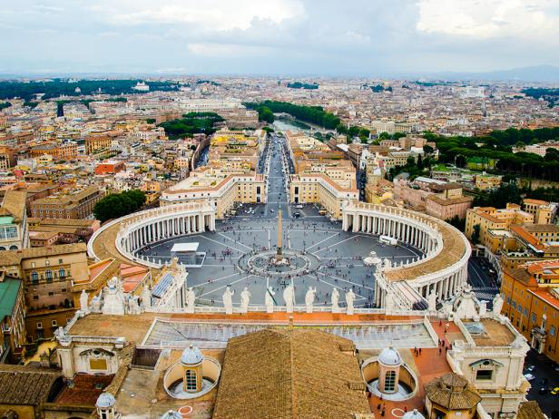

Santorini, Greece (12 Best Places to Visit in Greece, 2024) Santorini is one of the most breathtaking places in the world. We have both seen the famous whitewashed buildings overlooking the sea, and have always wanted to experience visiting them. Santorini, Greece is rich in history and culture with Fira & Oia being on our bucket list to walk through; experiencing charming streets, local markets, and traditional Greek architecture.
Tokyo, Japan (Tokyo Images – Browse 852,066 Stock Photos, Vectors, and Video, n.d.) Tokyo is a city with ultramodern technology, and as our immaculate passion for technology, we are very interested in visiting Japan, specifically Tokyo. The seasonal beauty Tokyo has is incomparable with any other city. Tokyo changes dramatically with the seasons; spring for breathtaking cherry blossoms, summer for lively festivals, autumn for stunning foliage, and winter for holiday illuminations.
Rome, Italy  (Auvil, 2017) Rome is a place where history, art, and culture blend seamlessly with modern life. Rome is one of the most iconic travel destinations in the world that offers breathtaking landmarks, rich traditions, and incredible food.
Cape Town, South Africa (Editorial Team, 2023b) Cape Town is a melting pot of culture, and its cuisines and breathtaking activities are what stood out to us. The beaches, food, and diversity are what we want to experience because Cape Town is an award-winning food and wine city.
Madrid, Spain (Corrigan, 2019) Madrid is the central capital of Spain known for its rich history, passionate soccer culture, and lively nightlife.